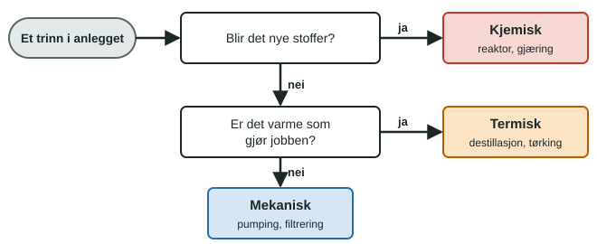

Mekaniske, termiske og kjemiske operasjoner
Det finnes mange enhetsoperasjoner, men de kan sorteres i tre grupper etter hva som gjør jobben: krefter og bevegelse, varme eller en kjemisk reaksjon. Når du vet hvilken gruppe et trinn hører til, vet du mye om hvordan utstyret virker og hvilke farer det har.
Hva er det som gjør jobben?
For å finne ut hvilken type et trinn er, spør du: Hva er det som gjør jobben her?
- I en mekanisk operasjon gjøres jobben av krefter og bevegelse. Stoffet blir knust, flyttet, blandet eller skilt, men det er det samme stoffet etterpå.
- I en termisk operasjon gjøres jobben av varme. Vi tilfører eller fjerner varme, og ofte skifter stoffet fase. Det er fortsatt det samme stoffet etterpå.
- I en kjemisk operasjon gjøres jobben av en kjemisk reaksjon. Stoffene som går inn, blir til nye stoffer.

Mekaniske operasjoner
Her bruker vi krefter: trykk, slag, tyngdekraft eller den kraften som oppstår når noe roterer fort. Stoffet endrer størrelse, plass eller blanding, men ikke hva det er.
- Endre størrelse: knusing og maling
- Flytte: pumper flytter væsker, og kompressorer og vifter flytter gasser
- Blande: omrøring i en tank
- Skille: sikting, sedimentering, sentrifugering, filtrering og syklon
Du lærer mer om disse i emnene Transport av væsker og gasser og Mekaniske operasjoner. Start gjerne med Knusing og maling.
Termiske operasjoner
Her tilfører eller fjerner vi varme. Ofte er målet at stoffet skal skifte fase, det vil si gå fra fast stoff til væske, fra væske til gass eller motsatt. Det er det samme stoffet, bare i en annen form. Vann er fortsatt vann, enten det er is, vann eller damp.
- Endre temperatur: varmeveksling, kjøling og oppvarming
- Skifte fase: fordamping, kondensering og krystallisering
- Skille: destillasjon, inndamping og tørking
Ekstraksjon og absorpsjon regnes ofte med blant de termiske separasjonsmetodene, selv om de ikke trenger mye varme. Ved ekstraksjon går et stoff over fra et fast stoff eller en væske til en annen væske, slik smaken går fra kaffepulveret til vannet. Ved absorpsjon går et stoff over fra en gass til en væske. Her er det ikke varme, men hvor godt stoffet løser seg, som gjør jobben. Derfor passer de ikke helt i skjemaet over. Du lærer mer i emnene Varmeoverføring og Termisk separasjon.
Kjemiske operasjoner
Her reagerer stoffene og blir til nye stoffer med andre egenskaper. Dette skjer i en reaktor eller i en ovn. Eksempler:
- forbrenning: brensel reagerer med oksygen og gir varme
- gjæring: gjærsopp gjør sukker om til etanol og karbondioksid
- nøytralisering: en syre og en base reagerer, for eksempel når surt avløpsvann renses
- metallframstilling: på et smelteverk reagerer malmen med karbon (koks) ved høy temperatur, slik at metallet blir frigjort
Selve reaksjonene lærer du om i Kjemiske prinsipper. I dette temaet ser vi på reaktoren som utstyr, i emnet Reaktorer og blanding.
To slags separasjon
Separasjon betyr å skille stoffer fra hverandre. Det kan være både mekanisk og termisk, og forskjellen er nyttig å kjenne:
| Mekanisk separasjon | Termisk separasjon | |
|---|---|---|
| Hva skilles? | Partikler eller dråper som ligger i en annen væske eller gass, for eksempel sand i vann | Stoffer som er løst eller blandet i hverandre, for eksempel salt i vann eller etanol i vann |
| Hva utnyttes? | Ulik størrelse eller ulik tetthet | Ulikt kokepunkt, eller at bare ett av stoffene fordamper (ved ekstraksjon: ulik løselighet) |
| Eksempler | filtrering, sentrifugering, sedimentering | destillasjon, inndamping, tørking |
| Energibruk | Som regel lite | Som regel mye, fordi stoff må varmes og fordampes |
En god regel er: Hvis du kan se partiklene, eller de synker til bunns når blandingen står i ro, holder det ofte med mekanisk separasjon. Er stoffet løst opp, slik at væsken er klar, hjelper ikke et filter. Da trengs som regel en termisk metode. Mekanisk separasjon er billigere, så anlegget skiller ut mest mulig mekanisk først.
Mange apparater gjør flere ting
Ett apparat kan ha mer enn én type operasjon. En reaktor har ofte en omrører (mekanisk) og en kappe med kjølevann rundt seg (termisk), mens selve jobben er en reaksjon (kjemisk). Vi sorterer etter hovedjobben, altså det trinnet først og fremst skal gjøre.
På forrige side så du et anlegg som lager etanol av korn. Slik sorterer vi trinnene:
- Maling gjør kornet til mel. Det er det samme stoffet, bare i mindre biter. Mekanisk.
- Blanding og oppvarming: Omrøring er mekanisk, og oppvarming er termisk. Men det skjer også en reaksjon, for enzymene bryter ned stivelse til sukker. Dette trinnet er en blanding av alle tre, og det er helt vanlig.
- Gjæring gjør sukker om til etanol og CO2. Det blir nye stoffer. Kjemisk.
- Destillasjon skiller etanol fra vann ved at blandingen kokes. Etanol er løst i vannet, så et filter hjelper ikke. Termisk.
Typen operasjon sier mye om hvilke farer du må passe på:
- Mekanisk: roterende og bevegelige deler som kan klemme eller dra deg inn, støv og støy. Utstyret skal stoppes og sikres med lås og merk før noen jobber på det.
- Termisk: varme flater, damp og varme væsker som kan gi brannskader. Væske som varmes opp i en lukket beholder, kan gi farlig høyt trykk.
- Kjemisk: reaksjoner som gir varme, kan løpe løpsk hvis kjølingen svikter. Det kan også dannes giftige eller brennbare gasser, og råstoffene kan være etsende.
Test deg selv
1. En sentrifuge skiller faste partikler fra en væske ved å rotere veldig fort. Hvilken type operasjon er det?
- Mekanisk
- Termisk
- Kjemisk
Det er kraften fra rotasjonen som gjør jobben. Stoffene er de samme etterpå, og det brukes ikke varme. Derfor er det en mekanisk operasjon.
2. Vann kokes bort fra en saltløsning, slik at saltet blir igjen. Hvilken type operasjon er det?
- Mekanisk
- Termisk
- Kjemisk
Det er varmen som gjør jobben, og vannet skifter fase fra væske til damp. Saltet og vannet er de samme stoffene etterpå. Dette kalles inndamping, og det er en termisk operasjon.
3. Hva er typisk for en kjemisk operasjon?
- Stoffet skifter fase, for eksempel fra væske til gass.
- Stoffene blir til nye stoffer med andre egenskaper.
- Stoffet blir delt i mindre biter.
I en kjemisk operasjon skjer det en reaksjon, og det blir nye stoffer. Å skifte fase er termisk, og å dele i biter er mekanisk.
4. Sukker er løst i vann, og væsken er helt klar. Hvorfor kan du ikke få ut sukkeret med et filter?
- Fordi filteret blir tett av sukkeret
- Fordi sukkeret er løst opp og går gjennom filteret sammen med vannet
- Fordi sukker reagerer med filteret
Et filter holder bare igjen partikler som er større enn hullene. Oppløst sukker er fordelt i vannet og går rett gjennom. Da må du bruke en termisk metode, for eksempel inndamping.
5. En reaktor har omrører og en kappe med kjølevann. Hvordan sorterer vi den?
- Som mekanisk, fordi den har en omrører
- Som termisk, fordi den blir kjølt
- Som kjemisk, fordi hovedjobben er en reaksjon
Mange apparater gjør flere ting. Omrøring og kjøling hjelper til, men reaktoren er der for at stoffene skal reagere. Vi sorterer etter hovedjobben.
Ordliste
| Begrep | Forklaring | Engelsk |
|---|---|---|
| mekanisk operasjon | En enhetsoperasjon der krefter og bevegelse gjør jobben, for eksempel pumping, knusing eller filtrering. Stoffet er det samme etterpå. | |
| termisk operasjon | En enhetsoperasjon der varme gjør jobben, for eksempel varmeveksling, destillasjon eller tørking. Stoffet er det samme etterpå, men kan ha skiftet fase. | |
| kjemisk operasjon | En enhetsoperasjon der stoffer reagerer og blir til nye stoffer. Den skjer i en reaktor eller en ovn. | |
| fase | Formen et stoff har: fast stoff, væske eller gass. Når et stoff smelter, fordamper eller kondenserer, skifter det fase. To væsker som ikke blander seg, som olje og vann, er også to faser. | |
| separasjon | Å skille stoffer fra hverandre, for eksempel med filtrering eller destillasjon. | |
| reaktor | En tank eller beholder der stoffer reagerer og blir til nye stoffer. | reactor |
Les mer
- Hva er en enhetsoperasjon?: forrige side, med etanolanlegget.
- Knusing og maling: første side i emnet Mekaniske operasjoner.
- Kjemiske prinsipper: kjemiske reaksjoner.
Om kildene: Teksten, eksemplene og figurene på denne siden er laget for dette nettstedet. Siden bygger på undervisningsopplegg i kjemiprosess- og laboratoriefag ved Sauda vgs, som er utarbeidet med utgangspunkt i blant annet Kjemien stemmer, Laboranten og åpne nettkilder.